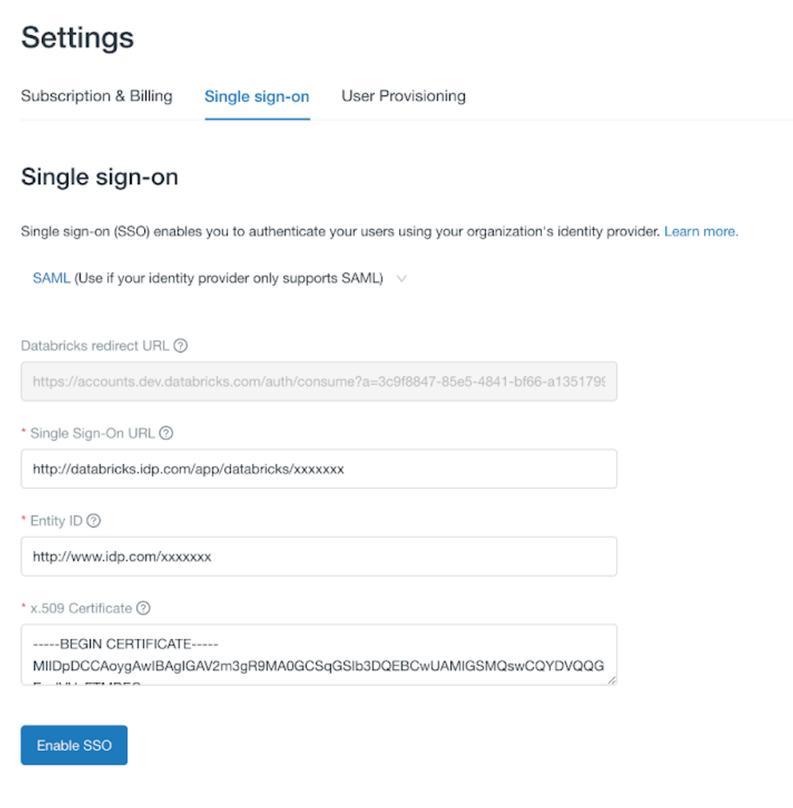

Set up SSO in your Databricks account console
This article hows how to configure single sign-on (SSO) to authenticate to the account console and Databricks workspaces using your organization’s identity provider.
Overview of SSO setup
SSO supports using either SAML 2.0 or OpenID Connect (OIDC). Your identity provider (IdP) must support at least one of these protocols.
Once you have enabled SSO in the account console, you can choose to enable unified login. Unified login allows you to manage one SSO configuration in your account that is used for the account and Databricks workspaces. If your account was created after June 21, 2023, unified login is enabled on your account by default for all workspaces, new and existing, and it cannot be disabled. For more information, see Enable unified login.
In workspaces where unified login is disabled, workspace-level SSO needs to be configured separately. For more information, see Set up SSO for your workspace.
You can read the instructions on how to configure SSO to the following identity providers:
The process is similar for any identity provider that supports OIDC or SAML 2.0. If your identity provider is not listed above, follow the instructions below for OIDC or SAML.
Enable account single sign-on authentication using OIDC
Warning
To prevent getting locked out of Databricks during single sign-on testing, Databricks recommends keeping the account console open in a different browser window.
As an account admin, log in to the account console and click the Settings icon in the sidebar.
Click the Single sign-on tab.
From the drop-down at the top of this tab, select OpenID Connect.
On the Single sign-on tab, make note of the Databricks Redirect URI value.

Go to your identity provider and create a new client application (web), entering the Databricks Redirect URI value in the appropriate field in the identity provider configuration interface.
Your identity provider should have documentation to guide you through this process.
Copy the client ID, client secret, and OpenID issuer URL generated by the identity provider for the application.
Client ID is the unique identifier for the Databricks application you created in your identity provider. This is sometimes referred to as the Application ID.
Client secret is a secret or password generated for the Databricks application that you created. It is used to authorize Databricks with your identity provider.
OpenID issuer URL is the URL at which your identity-provider’s OpenID Configuration Document can be found. That OpenID Configuration Document must found be in
{issuer-url}/.well-known/openid-configuration.
Return to the Databricks account console Single sign-on tab and enter values you copied from the identity provider application to the Client ID, Client secret, and OpenID issuer URL fields.

Click Save.
Click Test SSO to validate that your SSO configuration is working properly.
Click Enable SSO to enable single sign-on for your account.
Test account console login with SSO.
Grant all account users access to the Databricks application in your identity provider. You might need to modify the access permissions for the application.
Enable account single sign-on authentication using SAML
The following instructions describe how to use SAML 2.0 to authenticate account console users. .. warning:
To prevent getting locked out of <Databricks> during single sign-on testing, Databricks recommends keeping the account console open in a different browser window.
View the account console SSO page and copy the SAML URL:
As an account admin, log in to the account console and click the Settings icon in the sidebar.
Click the Single sign-on tab.
From the drop-down at the top of this tab, select SAML 2.0.
Copy the value in the Databricks SAML URL field. You will need the Databricks SAML URL for a later step.

In another browser window or tab, create a Databricks application in your identity provider:
Go to your identity provider (IdP).
Create a new client application (web):
Use your identity provider’s documentation as needed.
For the SAML URL field (which might be called a redirect URL), use the Databricks SAML URL that you copied from the Databricks page.
Copy the following objects and fields from your new Databricks application:
The x.509 certificate: A digital certificate provided by your Identity Provider for securing communications between Databricks and the Identity Provider
The single-sign-on (SSO) URL for your identity provider. This is the URL that initiates single sign-on with your identity provider. This is also sometimes referred to as the SAML endpoint.
The identity provider issuer: This is the unique identifier for your SAML identity provider. This is sometimes referred to as the Entity ID or Issuer URL.
Set your Databricks account to use your identity provider:
Return to the browser tab or window with the the Databricks account console SSO page.
Type or paste the following fields from your identity provider’s Databricks application: the single sign-on URL, the identity provider entity ID, and the x.509 Certificate.
Click Save.
Click Test SSO to validate that your SSO configuration is working properly.
Click Enable SSO to enable single sign-on for your account.
Test account console login with SSO.
Grant all account users access to the Databricks application in your identity provider. You might need to modify the access permissions for the application.
Enable unified login
Preview
Unified login is currently in Public Preview for accounts created before June 21, 2023. Unified login is generally available for accounts created after June 21, 2023.
Unified login allows you to manage one SSO configuration in your account that is used for the account and Databricks workspaces. When SSO is enabled on your account, you can choose to enabled unified login for all workspaces or for selected workspaces. Unified login workspaces use the account-level SSO configuration, and all users, including account and workspace admins, must sign in to Databricks using SSO. You cannot manage SSO separately on the workspace-level in a unified login enabled workspace. Databricks recommends that you configure unified login for all workspaces.
If your account was created after June 21, 2023, unified login is enabled on your account by default for all workspaces, new and existing, and it cannot be disabled.
You can enable unified login using the account console or the workspace admin settings page.
Enable unified login using the account console
SSO must be enabled in the account to enable unified login.
As an account admin, log in to the account console and click the Settings icon in the sidebar.
Click the Single sign-on tab.
In Unified login, click Get started.
Ensure that all workspaces users have access to the identity provider in your account-level SSO configuration. Click Confirm.
Choose to apply unified login to All workspaces or Selected workspaces. Databricks recommends that you enable unified login for all workspaces.
If you choose Selected workspaces, choose to apply settings to newly created workspaces and select the existing workspaces to apply the settings to.
Click Save
Enable unified login using the workspace admin settings page
If unified login is enabled on selected workspaces by an account admin, a workspace admin can enable unified login on their workspace. If unified login is enabled on all workspaces, the single sign on configuration is not available on the workspace-level.
As a workspace admin, log in to the Databricks workspace.
Click your username in the top bar of the Databricks workspace and select Admin Settings.
Click on the Identity and access tab.
Next to SSO settings, click Manage.
Next to Unified login click Enable.
Upgrade to unified login
If you are enabling unified login on an existing workspace with workspace-level SSO configured, do the following:
Configure single sign on on your account.
Ensure the users in your workspace have access to the account-level SSO application in your identity provider.
Granting users access to the account-level SSO application does not grant them any additional access in Databricks. All Databricks workspace users are automatically users in the Databricks account. See How does Databricks sync identities between workspaces and the account?.
Configure unified login on the workspace following Enable unified login.
Test SSO on the workspace by having a workspace user sign in.
Decommission the workspace-level SSO application in your identity provider.
Account sign-in process
When account-level SSO is enabled, the sign-in behavior is as follows:
All users, including admins, must sign in to the Databricks account and unified-login enabled workspaces using single sign-on. They cannot sign in using their username and password.
Note
If your account was created before June 21, 2023, the account owner can login to the Databricks account using their username and password.
Account admins can use their username and password to make account-level REST API calls.
All users can use their username and password to make workspace-level REST API calls. Databricks recommends using personal access tokens instead.
To learn about the workspace sign-in process when SSO is enabled, see Workspace sign-in process.